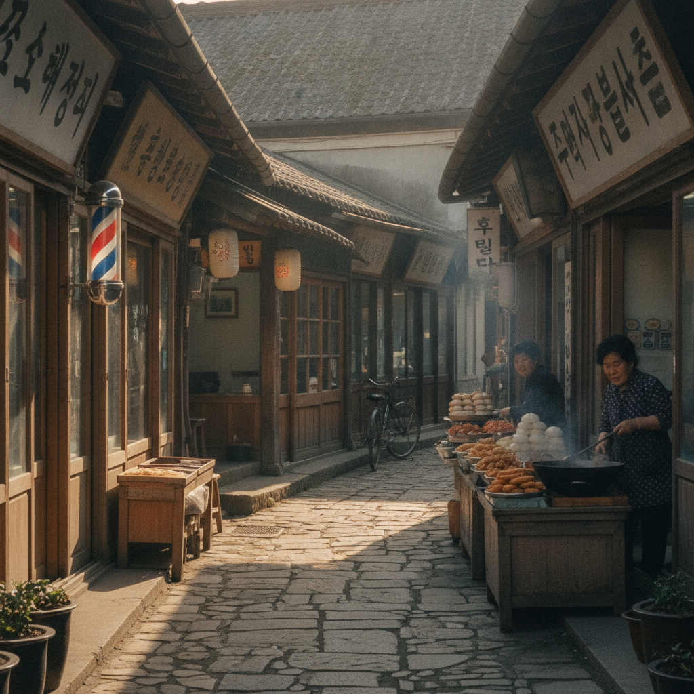

강화 교동도 당일치기 가을 나들이 — 교동대교 출입증 발급과 대룡시장·망향대 코스
인천 강화군 교동도는 2014년 교동대교 개통 이후 배편 없이 자동차로 편안하게 찾아갈 수 있는 서해 최북단 섬입니다. 민간인출입통제선(민통선) 북쪽에 자리 잡아 1960~70년대 옛 골목 풍경이 고스란히 남아 있는 대룡시장과 북녘 땅이 한눈에 내려다보이는 망향대, 화개정원 전망대까지 당일치기로 둘러보기 안성맞춤입니다. 본 글에서는 교동대교 진입 시 필수인 출입증 발급 절차부터 주요 명소 비교, 효율적인 가을 드라이브 동선까지 상세히 안내해 드립니다.
강화도 본섬과 교동도를 잇는 웅장한 교동대교와 서해 바다 전경 / AI 제작 이미지
01 | 시간이 멈춘 평화의 섬, 가을 교동도가 특별한 이유
교동도는 한국전쟁 당시 황해도 연백군에서 피란 내려온 실향민들이 한강 하구를 건너 정착하면서 형성된 특별한 역사와 문화를 간직하고 있습니다. 강화 본섬의 번잡함에서 벗어나 고즈넉한 들녘과 바다 풍경을 누릴 수 있어 수도권 당일치기 힐링 여행지로 급부상했습니다.
특히 9월 하순부터 10월까지는 섬 전체의 넓은 평야가 황금빛 벼이삭으로 물들고, 저수지와 해안가를 따라 갈대와 억새가 장관을 이룹니다. 맑고 청명한 가을 날씨에는 망향대에서 북한 황해도 연백평야의 들판과 주택까지 육안으로 선명하게 조망할 수 있어 계절적 만족도가 가장 높습니다.
서울 도심이나 인천에서 출발할 경우 김포한강로와 강화대교를 거쳐 약 1시간 30분에서 2시간이면 교동도 입구에 도착할 수 있어 주말 나들이 코스로 부담이 없습니다.
02 | 교동대교 민통선 출입증 사전 등록 및 검문소 통과 절차
교동도는 군사분계선과 인접한 민간인출입통제구역이므로 교동대교를 건너기 전 반드시 군 검문소에서 차량 출입 승인을 받아야 합니다. 과거에는 종이 출입증을 수기로 작성하여 정체가 극심했으나, 현재는 QR코드 기반 전자출입시스템이 도입되어 매우 신속하게 통과할 수 있습니다.
📱 교동대교 차량 출입증 발급 3단계 절차
1. 사전 QR 등록: 교동대교 진입로 1km 전방 길가에 설치된 입간판의 QR코드를 스마트폰 카메라로 스캔하거나 '강화군 민통선 출입 시스템' 웹페이지에 접속합니다.
2. 차량 및 방문자 정보 입력: 운전자 성명, 연락처, 차량번호, 동승자 인원수, 방문 목적을 입력하고 개인정보 동의를 완료하면 스마트폰 화면에 임시 바코드가 생성됩니다.
3. 검문소 통과 및 인식: 봉소리 검문소 초소에서 창문을 내리고 스마트폰 화면의 바코드를 군 장병이 스캐너로 확인하면 바리케이드가 열리며 교동대교로 진입할 수 있습니다. (소요시간 차량당 10~20초 내외)
💡 스마트폰 사용이 미숙하거나 단체 버스인 경우
스마트폰 QR 등록이 어렵다면 검문소 우측 간이 부스에 차량을 정차한 뒤 운전자 신분증(주민등록증 또는 운전면허증)을 제시하고 수기 임시출입증을 발급받아 차량 대시보드 위에 비치하시면 됩니다.
03 | 1960년대 골목 풍경을 간직한 대룡시장의 유래와 분위기
교동도의 심장부라 할 수 있는 대룡시장은 한국전쟁 당시 피란민들이 고향인 황해도 연백군에 있는 '연백시장'의 골목 구조를 본떠 만든 골목 시장입니다. 휴전 후 고향으로 돌아가지 못한 실향민들이 생계를 꾸리며 70여 년간 섬 안의 삶의 터전을 일구어 왔습니다.
오랜 세월 동안 군사보호구역으로 묶여 있었던 탓에 개발의 손길이 닿지 않아, 영화 세트장을 연상시키는 좁은 골목길과 옛 간판, 슬레이트 지붕, 이발소, 양장점, 약방의 정취가 그대로 보존되어 있습니다.
골목 벽면 곳곳에는 과거 1960~70년대 교동도 주민들의 일상과 장터 풍경을 해학적으로 묘사한 벽화와 조형물이 설치되어 있어 걸음마다 정겨운 추억을 소환합니다. 시장 입구에는 넓은 공영주차장이 마련되어 있으며 주차 요금은 무료입니다.

1970년대 시간의 결을 간직한 교동도 대룡시장의 레트로 골목길 풍경 / AI 제작 이미지
04 | 대룡시장 대표 레트로 먹거리와 골목 투어 즐기는 법
대룡시장을 찾는 또 다른 즐거움은 오직 이곳에서만 맛볼 수 있는 개성 넘치는 로컬 레트로 먹거리입니다. 시장 초입부터 퍼져 나오는 고소한 기름 냄새와 달콤한 향기가 여행자의 발길을 붙잡습니다.
가장 유명한 먹거리는 황해도식 전통 조리법으로 빚어낸 '강아지떡'입니다. 찹쌀떡 속에 팥앙금을 넣고 겉에 노란 콩고물을 듬뿍 묻혀 쫄깃하면서도 자극적이지 않은 담백한 맛이 일품입니다. 옛날 다방에서 달걀노른자를 띄워 내어주는 따뜻한 '쌍화차'와 참기름병에 담아 파는 '밀크티'는 젊은 층 사이에서도 감성 디저트로 손꼽힙니다.
이 밖에도 즉석에서 바삭하게 튀겨내는 찹쌀 꽈배기, 연산군 유배지의 이야기를 담은 유배 과자, 교동 쌀로 빚은 쌀호떡 등이 1인당 2천~5천 원 안팎의 부담 없는 가격에 판매되고 있습니다.
05 | 북녘 땅이 손에 잡힐 듯한 망향대와 평화전망대
대룡시장에서 차로 약 10분 정도 북서쪽 해안으로 이동하면 실향민들의 애환이 깃든 '망향대(望鄕臺)'에 닿게 됩니다. 교동도와 마주한 북한 황해도 연백군 유도리까지의 거리는 불과 2.6km~3km에 불과합니다.
언덕 위에 세워진 망향탑 앞에는 고향을 향해 제사를 올릴 수 있는 제단과 무료로 이용 가능한 고성능 망원경이 설치되어 있습니다. 날씨가 맑은 날 망원경을 들여다보면 북한 주민들이 자전거를 타고 들판을 지나가거나 논밭에서 일하는 모습, 옹기종기 모여 있는 주택 지붕까지 놀라울 정도로 선명하게 관찰됩니다.
철책선 너머로 흐르는 고요한 예성강 하구 물길을 바라보며 분단의 현실과 평화의 소중함을 되새겨볼 수 있는 뜻깊은 장소입니다.
06 | 모노레일 타고 오르는 화개정원과 스카이워크 전망대
2023년 정식 개장한 '화개정원'은 교동도에서 가장 높은 화개산(해발 259m) 자락에 조성된 대규모 힐링 테마공원입니다. 물, 역사, 문화, 추억, 평화를 주제로 한 5색 테마 정원이 계절별 야생화와 어우러져 산책하기 좋습니다.
정원 입구에서 산 정상까지 약 2km 구간을 운행하는 8인승 모노레일을 탑승하면 힘들이지 않고 20분 만에 화개산 정상 스카이워크 전망대에 도착할 수 있습니다. 모노레일 창밖으로 펼쳐지는 교동도의 황금빛 가을 들녘 풍경이 탄성을 자아냅니다.
정상에 설치된 솥뚜껑 모양의 스카이워크 전망대는 바닥 일부가 투명 강화유리로 되어 있어 아찔한 스릴을 선사하며, 서해의 크고 작은 섬들과 북한 황해도까지 360도 파노라마 조망이 가능합니다.
화개산 정상 스카이워크 전망대에서 내려다본 황금들녘과 서해 바다 전경 / AI 제작 이미지
07 | 교동향교와 고구저수지 갈대밭 걷기 좋은 드라이브길
교동도에는 우리나라에서 가장 오래된 향교로 알려진 '교동향교'가 자리 잡고 있습니다. 고려 인종 5년(1127년)에 창건되어 문묘에 안향 선생이 원나라에서 들여온 공자 상을 국내 최초로 모셨던 유서 깊은 교육 기관입니다. 한적한 숲길에 둘러싸인 홍살문과 명륜당을 거닐며 조용한 사색의 시간을 가질 수 있습니다.
향교를 둘러본 뒤에는 섬 중앙에 위치한 '고구저수지' 수변 데크길을 방문해 보세요. 가을철이면 저수지 주변으로 은빛 갈대가 일렁이며, 낚시꾼들과 철새들이 어우러져 평화로운 풍경을 만들어냅니다.
섬 내부 도로는 대부분 왕복 2차선의 평탄한 아스팔트 길로 연결되어 있어 자전거 라이딩이나 드라이브를 즐기기에 최상의 조건을 갖추고 있습니다.
08 | 교동도 주요 명소별 입장료·주차 정보 비교표
여행 동선을 계획할 때 참고할 수 있도록 교동도 내 핵심 명소들의 공식 운영 정보와 비용을 비교 정리하였습니다.
| 명소 구분 |
입장 요금 |
모노레일/기타 요금 |
주차 요금 |
휴무 및 운영시간 |
| 화개정원 & 전망대 |
어른 5,000원 / 군민 무료 |
모노레일 왕복 12,000원 |
무료 (대형 주차장) |
연중무휴 09:00~18:00 (입장마감 17:00) |
| 대룡시장 골목투어 |
무료 |
먹거리 체험 1만 원 안팎 |
무료 (공영주차장 완비) |
상점별 상이 (주말 10:00~18:00 활발) |
| 교동 망향대 |
무료 |
망원경 무료 관람 |
무료 (간이 주차 10대) |
상시 개방 (일몰 전 퇴장 권장) |
| 교동향교 |
무료 |
문화해설 무료 |
무료 (향교 앞 공터) |
09:00~18:00 (명륜당 관람) |
화개정원 입장료는 어른 기준 5,000원이며, 모노레일은 민간 위탁 시설로 별도 왕복 12,000원이 부과됩니다. 대룡시장, 망향대, 교동향교는 모두 무료로 관람할 수 있어 가성비 높은 알뜰 여행이 가능합니다.
09 | 수도권 출발 교동도 당일치기 알짜 추천 여행 동선
복잡하지 않고 여유롭게 교동도의 핵심을 짚을 수 있는 1일 추천 코스입니다.
🧭 교동도 당일치기 완전 정복 동선
· 09:00 수도권 출발 (김포한강로 → 강화대교 이용)
· 10:30 교동대교 검문소 도착 및 QR 출입증 확인 후 대교 도하
· 11:00 화개정원 도착 → 모노레일 탑승 및 스카이워크 전망대 조망 (약 1시간 30분 소요)
· 12:40 대룡시장 이동 후 점심 식사 (황해도식 젖국갈비 또는 잔치국수) 및 레트로 간식 투어
· 14:30 교동 망향대 이동 → 북한 연백평야 조망 및 평화 기원
· 15:30 교동향교 역사 탐방 및 고구저수지 가을 갈대 드라이브
· 16:30 교동 파머스마켓 기념품(교동 쌀, 고구마) 구매 후 교동대교 출차
· 17:00 강화 본섬 서해 낙조 감상 후 귀가
10 | 교동도 방문 전 주의사항과 필수 확인 체크리스트
교동도는 군사분계선 인접 민통선 구역 특성상 일반 관광지와는 다른 출입 규정이 적용되므로 사전에 주의사항을 숙지하셔야 합니다.
📋 교동도 여행 전 필수 체크리스트
1. 탑승자 전원 실물 신분증 지참: 운전자뿐만 아니라 성인 동승자는 주민등록증이나 운전면허증, 미성년자는 가족관계증명서 또는 학생증을 반드시 소지해야 합니다.
2. 출입 가능 시간 엄수: 민통선 출입은 통상 일출 후부터 일몰 전까지만 허용됩니다. 계절별로 일몰 30분 전부터는 출입이 제한되므로 오후 늦은 시간 진입을 피하세요.
3. 드론 비행 및 무단 촬영 절대 금지: 섬 전체가 군사 안보 구역이므로 미승인 드론 비행 및 군사 시설, 검문소 방향 촬영은 군사기지 및 군사시설 보호법에 의해 엄격히 처벌됩니다.
4. 주말 귀가 차량 정체 대비: 일요일 오후 4시 이후에는 강화대교 방면 국도가 혼잡할 수 있으므로 오후 3시 이전에 서둘러 나오거나 저녁 식사 후 느긋하게 출발하는 것을 추천합니다.
#강화교동도
#교동도당일치기
#교동대교출입증
#대룡시장먹거리
#교동망향대
#화개정원모노레일
#화개산전망대
#강화도당일치기
#민통선여행
#레트로여행지